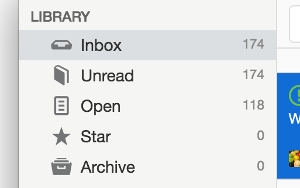
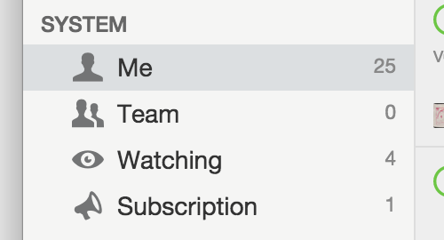
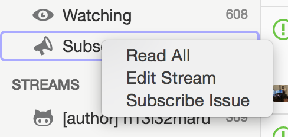
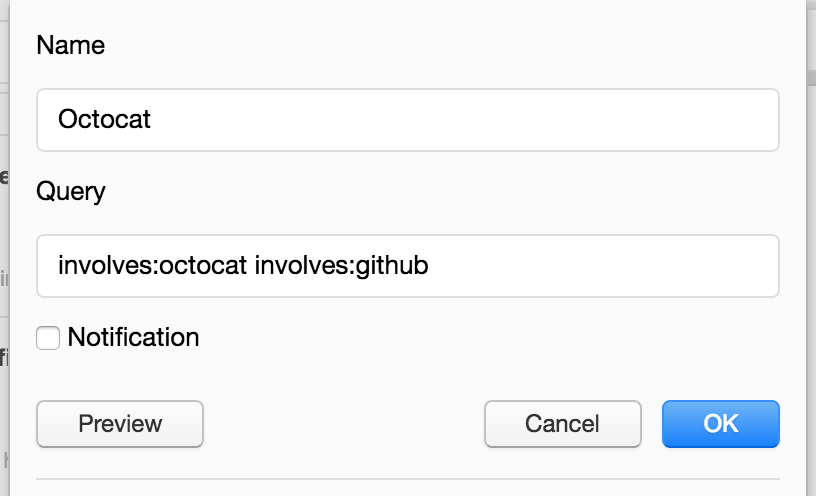
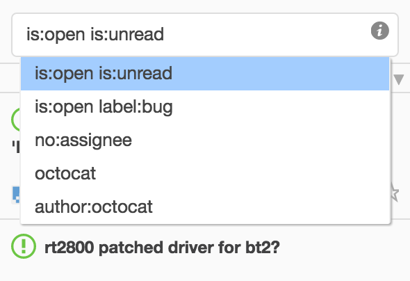
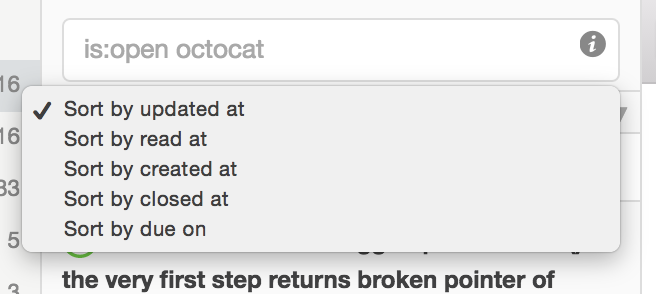
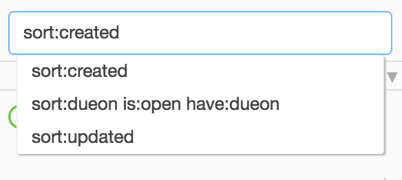
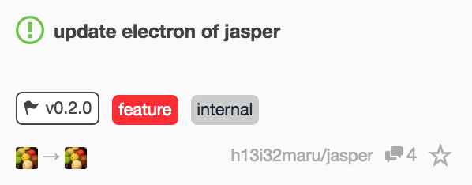
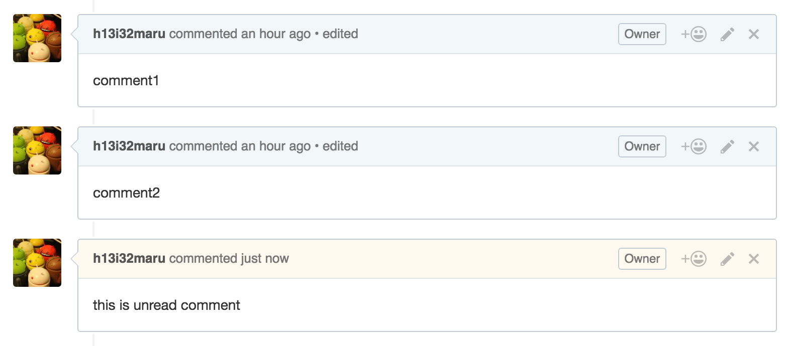

Library
Jasper will automatically summarizes all issues you have.

-
InboxAll issues. -
UnreadAll unread issues -
OpenAll opened issues -
StarAll marked star issues. -
ArchiveAll arhived issues.
Your Issues
Jasper automatically shows issues you are related to.

-
Meshows issues you are involved in and of your repositories (created, assigned, commented or mentioned). -
Teamshows issues your team is mentioned in. -
Watchingshows issues of repository you watch. -
Subscriptionshows issues you subscribed to with Jasper. right clickSubscriptionand selectSubscribe issue. this does not connect subscription of GitHub.
Stream
Stream shows issues matched a particular conditions you want to see.

author:defunkt is:prshows pull requests created by defunkt.involves:defunkt involves:jlordshows issues defunkt is involved in or jlord is involved in.cat repo:github/awesomeshows issues with "cat" and of github/awesome.
The major conditions are following.
is:issue is:pr |
only issues. only pull request. |
is:open is:closed |
only open issues. only closed issues. |
cat dog cat OR dog cat NOT dog |
issues with "cat" and "dog". issues with "cat" or "dog". issues with "cat" and without "dog". |
involves:defunkt involves:jlord |
issues defunkt is involved in or jlord is involved in (created, assigned, commented or mentioned). |
team:github/owners team:octocat/owners |
issues @github/owner is mentioned in or @octocat/owners is mentioned in. |
user:defunkt user:github |
issues of /defunkt(user) repositories or /github(organization) repositories. |
repo:defunkt/awesome repo:github/awesome |
issues of /defunkt/awesome repository or /github/awesome repository. |
author:defunkt author:jlord |
issues created by defunkt or jlord. |
assignee:defunkt author:jlord |
issues defunkt was assigned to or jlord was assigned to. |
mentions:defunkt mentions:jlord |
issues defunkt was mentioned in or jlord was mentioned in. |
commenter:defunkt commenter:jlord |
issues defunkt commented to or jlord commented to. |
language:javascript language:ruby |
issues of javascript repository or ruby repository. |
involves:defunkt -repo:github/awesome |
issues defunkt was involved in and without github/awesome |
All conditions are Searching issues and Search Syntax in GitHub.
Filter
The filtering feature selects issues by various conditions in local.

is:open is:unreadselects issues opened and unread.cat dogselects issues with "cat" and "dog" in title.label:"api bug" milestone:v0.0.1selects issues which have "api bug" label and in "v0.0.1" milestone.-label:bug -author:aliceselects issues which don't have "bug" label and were not created by "alice".
The all conditions are following.
cat dog "bug fix" |
issues with "cat" and "dog" in title. issues with "bug fix" in title. |
is:open is:closed |
issues are opened. issues are closed. |
is:unread is:read |
issues are unread. issues are read. |
is:issue is:pr |
only issues. only pull requests |
is:star is:unstar |
starred issues. unstarred issues. |
author:defunkt author:jlord |
issues were created by defunkt or jlord. |
assignee:defunkt author:jlord |
issues defunkt was assigned to or jlord was assigned to. |
user:defunkt user:github |
issues of /defunkt repositories or /github repositories. |
repo:defunkt/awesome repo:github/awesome |
issues of /defunkt/awesome repository or /github/awesome repository. |
label:bug label:api |
issues with "bug" label and "api" label. |
milestone:v1.0.0 milestone:v2.0.0 |
issues in "v1.0.0" milestone or "v2.0.0" milestone. |
no:label no:assignee no:milestone no:dueon |
issues have no labels. issues have no assignee. issues have no milestone. issues have no due date. |
have:label have:assignee have:milestone have:dueon
|
issues have labels. issues have assignee. issues have milestone. issues have due date. |
number:123 number:456 |
issues number of 123 or 456. |
-author:...
-assignee:...
-user:...
-repo:...
-label:...
-milestone:...
-number:...
|
- specifies exclusion condition. |
Sort
The sorting feature rearranges the order of issues. And you can specify more detailed condition as filter condition.
 
sort:createdsorts by create date.sort:reposorts by repository namesort:"repo desc,created asc"sorts by repository name and create date
The all conditions are following.
sort:updated |
sorts by create date. default order is desc. |
sort:created |
sorts by create date. default order is desc. |
sort:closed |
sorts by close date. default order is desc. |
sort:read |
sorts by read date. default order is desc. |
sort:dueon |
sorts by due date. default order is asc. this condition is useful with is:open have:dueon. |
sort:archived |
sorts by archive date. default order is desc. |
sort:star |
sorts by star date. default order desc. |
sort:title |
sorts by title. default order asc. |
sort:author |
sorts by author. default order is asc. |
sort:assignee |
sorts by assignee. default order is asc. |
sort:user |
sorts by user or organization. default order is asc. |
sort:repo |
sorts by repository. default order is asc. |
sort:milestone |
sorts by milestone. default order is desc. |
sort:number |
sorts by number. default order is desc. |
sort:type |
sorts by type(issue/pull request). default order is asc. |
Issue
The issue in issues pane(second column) displays some attributes of it.

You can filter issues with attributes by clicking.
For example if you click v0.2.0, filter issues with milestone:v0.2.0.
Clickable attributes are
 (open),
(open),
 (closed),
milestone, label, author, assignee, user, repo and comment(read/unread).
You can control a filter behavior by the following operation.
(closed),
milestone, label, author, assignee, user, repo and comment(read/unread).
You can control a filter behavior by the following operation.
- click without any key, append the filter to a current filter.
- click with ⌘(or ctrl) key, replace a current filter with the filter.
- click with shift key, remove the filter from a current filter.
Jasper highlights the comments that you have not yet read. And automatically scroll to the comment.

Keyboard shortcuts
Jasper supports below keyboard shortcuts
For Streams
D / F |
Next Stream / Prev Stream |
F1 / F2 / F3 / F4 / F5 |
Move to Inbox / Unread / Open / Star / Archive stream |
F6 / F7 / F8 / F9 |
Move to Me / Team / Watching / Subscription stream |
1 / 2 / 3 / 4 / 5 |
Move to 1st / 2nd / 3rd / 4th / 5th stream |
Alt + L |
Restart All Streams |
For Issues
. |
Load Issues |
J / K |
Next Issue / Prev Issue |
Y |
Toggle to skip read issues when move next/prev issue via keyboard shortcuts |
I / S / E |
Toggle Read / Star / Archive |
/ |
Focus on filter input box |
C |
Clear filter |
A / N / U / O / M |
Filter Author / Assignee / Unread / Open / Star |
Cmd(Ctrl) + O |
Open with External |
For Page
Cmd(Ctrl) + R |
Reload Page |
Cmd(Ctrl) + [ / Cmd(Ctrl) + ] |
Back Page / Next Page |
Cmd(Ctrl) + J / Cmd(Ctrl) + K |
Scroll Down / Scroll Up |
Cmd(Ctrl) + L |
Open Location |
For Other
Cmd(Ctrl) + 1 / Cmd(Ctrl) + 2 / Cmd(Ctrl) + 3 |
Single Pane / Two Pane / Three Pane |
Mac: Cmd + Ctrl + F / Windows: F11 |
Toggle Full Screen |
Cmd(Ctrl) + + / Cmd(Ctrl) + - / Cmd(Ctrl) + 0 |
Zoom Out / In / Reset |